Two independent layers protect the pack. Layer A is a hardware BMS that always limits cell voltage and current and balances the cells. Layer B is the ESP32 supervisor: five times a second it measures every cell voltage, the pack current, four cell temperatures and the air temperature, runs a two-state thermal model of every cell with a Kalman filter, and opens separate charge and load relays, latched, before a fixed limit is reached.
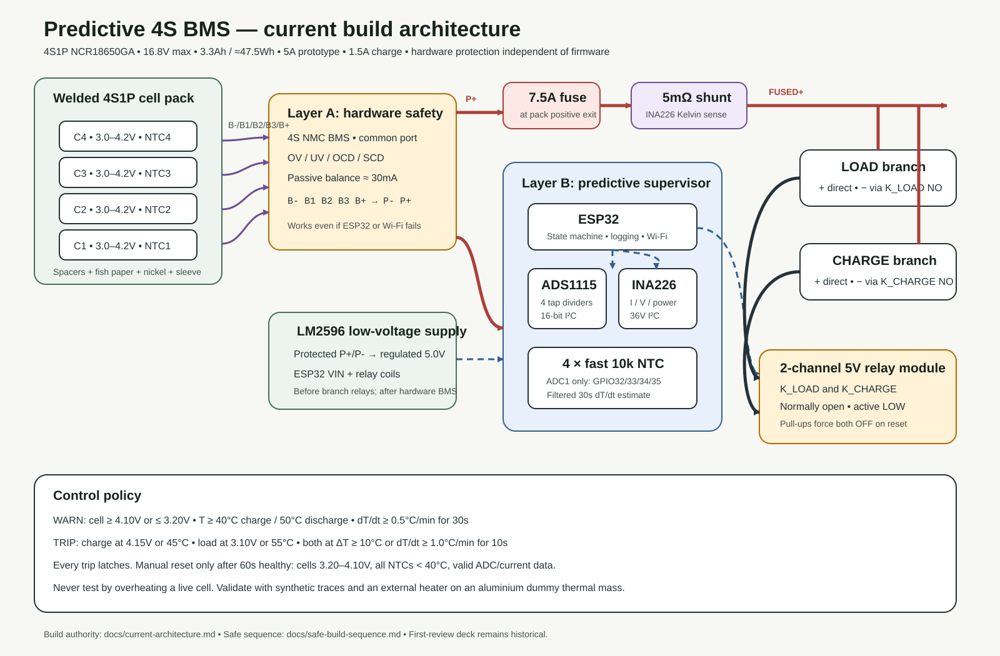
| Quantity | Value |
|---|---|
| Pack | 4S1P NCR18650GA, 14.4 V nominal, 16.8 V max, 3.3 Ah (label) |
| Continuous discharge | 5 A (software trip at 5.0 A); fuse 7.5 A at B+ |
| Charge | isolated 16.8 V CC/CV, 1.5 A max (software trip at 1.6 A) |
| Cell limits (software) | warn 4.10 V / 3.20 V; trip 4.15 V (charge off) / 3.10 V (load off) |
| Temperature limits | charging 40 / 45 °C; discharging 50 / 55 °C; spread 7 / 10 °C |
| Predictive levels | abnormal heat 0.5 °C/min Warning, 1.0 °C/min Trip; cell difference 0.3 / 0.6 °C/min |
| Hardware BMS | OV 4.25 V, UV 2.7 V, short circuit, balance from 4.18 V at 30 mA |
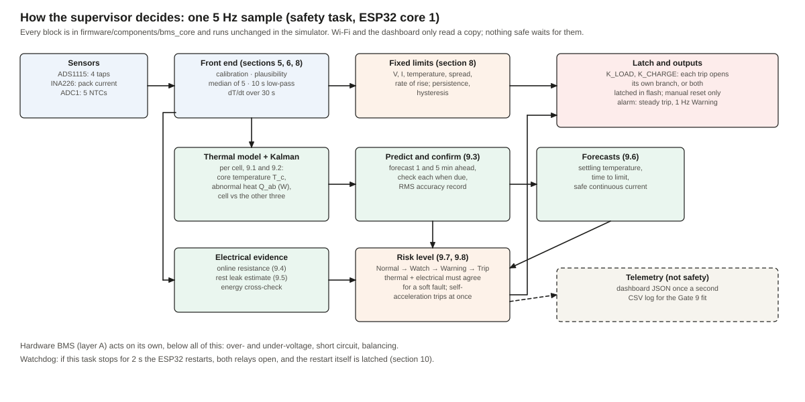
| Level | Entered when any one of these holds | Action |
|---|---|---|
| 0 Normal | none of the conditions below | none |
| 1 Watch | thermal: 5-minute forecast too low by 1.0 °C or more; abnormal heat 0.3 °C/min above the other cells for 30 s; under 10 min to the limit, or current above the safe current for 30 s. Electrical: leak at rest of 20 mA or more; resistance more than 30 % from its Gate 4 value | dashboard notice and log |
| 2 Warning | abnormal heat of 0.5 °C/min (about 0.4 W) for 30 s, or a thermal and an electrical Watch on the same cell | alarm; both branches stay on |
| 3 Trip | abnormal heat of 1.0 °C/min (about 0.75 W) for 10 s; 0.6 °C/min above the other cells for 10 s; self-accelerating heat while at Warning | both relays open, latched, logged |
Risk levels of architecture section 9.8. They are fixed rules, not a trained classifier, so every level can be traced to the measurement that set it.
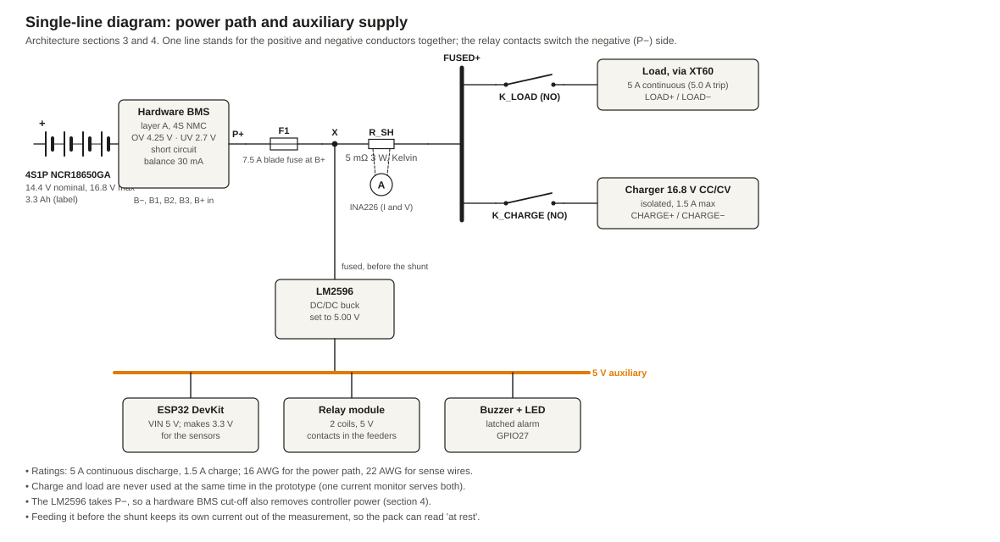
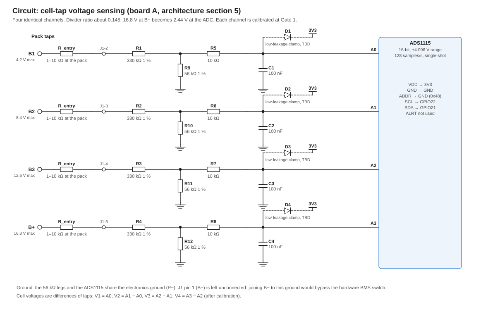
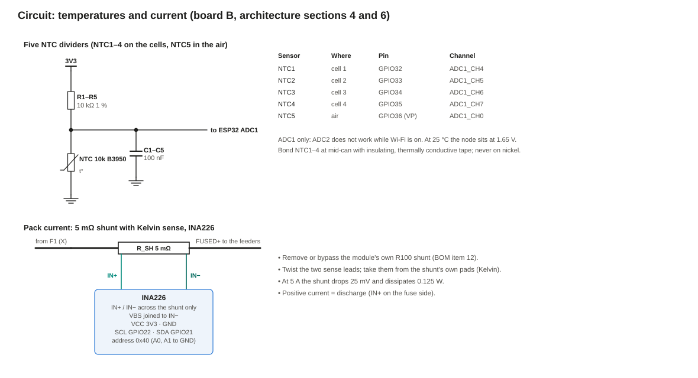
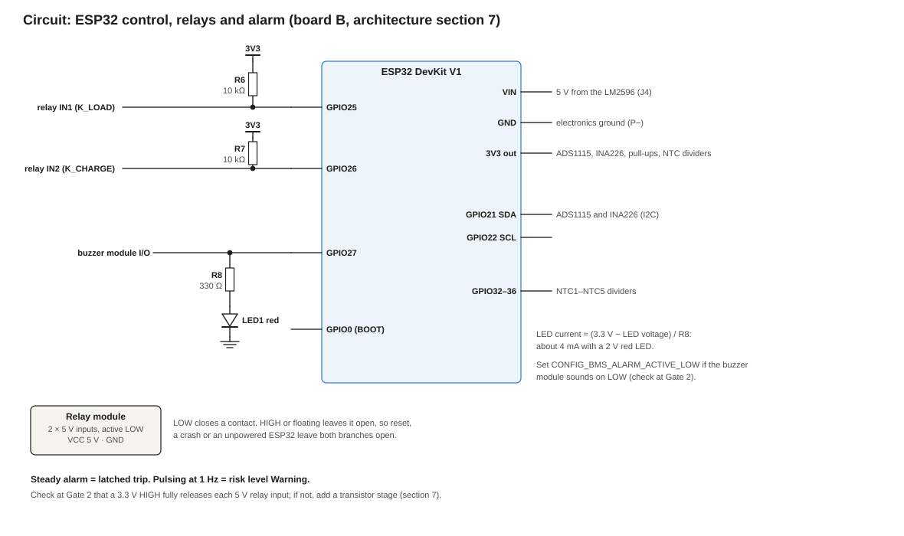
| Function | ESP32 pin | Board B | Notes |
|---|---|---|---|
| I2C SDA | GPIO21 | J7, J8 | ADS1115 (0x48) and INA226 (0x40) |
| I2C SCL | GPIO22 | J7, J8 | 4.7 kΩ pull-ups only if the modules have none |
| K_LOAD | GPIO25 | J5 IN1 | active LOW, 10 kΩ pull-up to 3V3 |
| K_CHARGE | GPIO26 | J5 IN2 | active LOW, 10 kΩ pull-up to 3V3 |
| Alarm buzzer and LED | GPIO27 | J6 I/O, LED1 | steady = trip, 1 Hz = Warning |
| NTC1 (cell 1) | GPIO32 · ADC1_CH4 | J9 | ADC1 only |
| NTC2 (cell 2) | GPIO33 · ADC1_CH5 | J10 | |
| NTC3 (cell 3) | GPIO34 · ADC1_CH6 | J11 | input-only pin |
| NTC4 (cell 4) | GPIO35 · ADC1_CH7 | J12 | input-only pin |
| NTC5 (air) | GPIO36 (VP) · ADC1_CH0 | J13 | input-only pin |
| Manual reset | GPIO0 (BOOT) | on the DevKit | hold 3 s; or reset on the console |
| Power | VIN 5 V, 3V3 out | J4, rails | VIN from the LM2596 set to 5.00 V |
Full replacement value of the active items: ₹9,260.19 (prices from bom.csv; shipping
excluded; items marked "existing stock" are owned already).
| # | Part | Specification | Qty | Line total | Status |
|---|---|---|---|---|---|
| 1 | Microcontroller | ESP32-WROOM-32 DevKit v1 30-pin | 1 pcs | ₹639.00 | In cart |
| 2 | Li-ion cells | Panasonic/Sanyo NCR18650GA 3.6V 3300mAh cells; matched 4S1P set | 4 pcs | ₹3,596.00 | Available from existing stock |
| 3 | Independent hardware BMS | 4S NMC common-port board; 20A hardware rating; OV/UV/OCD/SCD and passive balance | 1 pcs | ₹239.00 | In cart |
| 4 | Cell spacers | 18650 2x1 modular spacers; upper and lower layers | 4 pcs | ₹16.00 | In cart |
| 5 | Positive terminal rings | 18650 fish-paper adhesive terminal insulation 20-hole sheet | 2 sheet | ₹12.00 | In cart |
| 6 | Barrier paper and pack sleeve | Fish/barley paper plus appropriately sized PVC heat-shrink sleeve | 1 set | ₹150.00 | Verify before order |
| 7 | Pure nickel strip | 0.15x8mm pure nickel strip | 1 pack | ₹569.00 | Available from existing stock |
| 8 | Fast NTC thermistors | 10k B3950 epoxy bead thermistors | 5 pcs | ₹70.00 | Add one to cart |
| 9 | External ADC | ADS1115 16-bit 4-channel I2C ADC at 3.3V | 1 pcs | ₹119.00 | In cart |
| 10 | Precision resistor kit | 1% metal-film values including 10k; 56k; 330k | 1 set | ₹389.00 | In cart |
| 11 | RC filters and ADC clamps | 100nF capacitors; 10k series resistors; low-leakage 3.3V clamps | 1 set | ₹100.00 | Verify before order |
| 12 | Current and power monitor | INA226 36V bidirectional I2C module | 1 pcs | ₹124.00 | In cart |
| 13 | External shunt | 5mOhm 3W 1% Kelvin-connected shunt pack of 3 | 1 pack | ₹15.00 | In cart |
| 14 | Buck regulator | LM2596 adjustable buck set to 5.0V before connection | 1 pcs | ₹45.00 | In cart |
| 15 | Charge and load disconnect | Dual 5V relay module; 2 independently controlled NO contacts; 10A at 30VDC | 1 pcs | ₹209.00 | In cart |
| 16 | Pack fuse | 7.5A 32V medium ATC/ATO blade fuse | 2 pcs | ₹22.00 | In cart |
| 17 | Inline fuse holder | Waterproof inline blade-fuse holder pack of 5 | 1 pack | ₹589.00 | In cart |
| 18 | Power and balance connectors | 2 XT60 pairs plus 5-pin JST-XH balance or tap harness | 1 set | ₹140.00 | In cart |
| 19 | Power and sense wire | 16AWG red/black power wire plus five colours of 22AWG sense wire | 7 m | ₹198.00 | In cart |
| 20 | Perfboard | FR4 7x9cm 2.54mm single-sided prototyping board | 2 pcs | ₹78.19 | Available from existing stock |
| 21 | Dedicated charger | Isolated 16.8V CC/CV charger; 1.5A maximum; for 4S NMC or Li-ion | 1 pcs | ₹850.00 | Available from existing stock |
| 22 | Charger connector | Barrel adapter pair matched to the selected charger's measured plug; provisional 5.5x2.5mm | 1 pair | ₹169.00 | Hold - verify charger plug |
| 23 | PETG filament | 1.75mm PETG light grey 1kg spool | 1 spool | ₹780.00 | Available from existing stock |
| 24 | Mounting and strain relief | M3 standoffs; screws; cable glands; ferrules; ties and adhesive mounts | 1 set | ₹100.00 | Verify before order |
| 25 | Alarm | 5V active buzzer module plus red status LED and resistor | 1 set | ₹42.00 | In cart |
| Part | Value | Qty | Source |
|---|---|---|---|
| Ceramic capacitor | 100n | 9 | BOM item 11 |
| Clamp diode | clamp (TBD) | 4 | BOM item 11: chosen after the Gate 1 leakage test |
| LED | red LED | 1 | stock (BOM item 25) |
| Resistor 1/4 W 1 % metal film | 10k | 11 | kit (BOM item 10) |
| Resistor 1/4 W 1 % metal film | 330R | 1 | kit; any value that gives a few mA in the LED |
| Resistor 1/4 W 1 % metal film | 330k | 4 | kit (BOM item 10): check the value is in it |
| Resistor 1/4 W 1 % metal film | 56k | 4 | kit (BOM item 10): check the value is in it |
| Resistor 1/4 W (tap entry, at the pack end) | 1–10 kΩ, e.g. 10k | 4 | kit (section 11) |
These small parts are needed to build the boards as drawn and are not lines of the BOM yet.
| Part | Qty | Used for |
|---|---|---|
| Female header 1 × 15, 2.54 mm | 2 | ESP32 DevKit sockets (board B, U1) |
| Female header 1 × 10, 2.54 mm | 1 | ADS1115 socket (board A, J2) |
| Female header 1 × 8, 2.54 mm | 1 | INA226 socket (board B, J8) |
| Male header strip, 2.54 mm | 1 strip (40 pins) | J3, J7 (4 each), J5 (4), J6 (3), J14 (2), and spares |
| JST-XH 2-pin plug and socket with lead | 5 | NTC1–NTC5 (board B, J9–J13) |
| JST-XH 5-pin plug and socket with lead | 1 | tap harness (board A, J1); BOM item 18 has 4 |
| Screw terminal, 2-pin, 5.08 mm | 1 | 5 V in (board B, J4) |
| Female–female jumper leads, 20 cm | 1 set (about 15) | board A ↔ B link, relay inputs, buzzer |
| Tinned copper wire, 0.5–0.6 mm (or resistor offcuts) | about 1 m | bare runs and bridges on both boards |
| Insulated hook-up wire, 24–30 AWG | about 2 m | the insulated links (35 on both boards) |
| Heat-shrink, 2–3 mm | 1 m | tap-entry resistors and NTC leads |
| M3 nylon standoffs and screws | 8 | both boards (part of BOM item 24) |
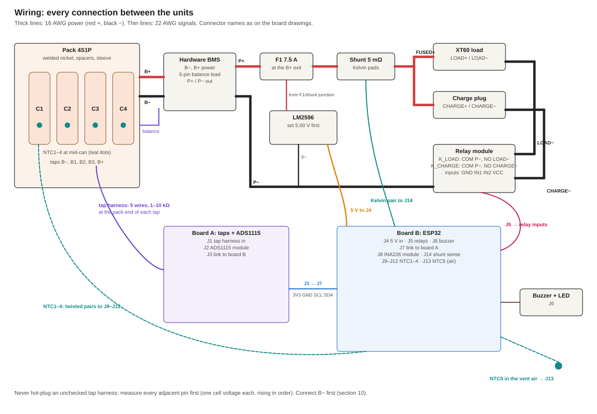
| Connector | Goes to |
|---|---|
| J1 B- | nothing (see the note on the sense ground) |
| J1 B1, B2, B3, B+ | the pack's taps, each through a 1-10 kΩ resistor at the pack end |
| J2 | ADS1115 module (plugs in) |
| J3 | board B J7: 3V3, GND, SCL, SDA |
| J4 | LM2596 output, set to 5.00 V before connecting |
| J5 GND, IN1, IN2, VCC | relay module GND, IN1 (K_LOAD), IN2 (K_CHARGE), VCC |
| J6 VCC, I/O, GND | active buzzer module |
| J7 | board A J3: 3V3, GND, SCL, SDA |
| J8 | INA226 module (plugs in) |
| J9-J12 | NTC1-NTC4 on cells 1-4 |
| J13 | NTC5 in the air of the vent path |
| J14 IN+, IN- | the shunt's Kelvin sense pair: IN+ on the fuse side, IN- on the load side |
Four identical divider channels feed the ADS1115. Parts are placed by channel, left to right in the direction of the signal: tap in, 330 kΩ, the node, 10 kΩ and 56 kΩ, then the filter capacitor and the clamp. Two bare buses run down the board: GND at column 15 and 3V3 at column 17.
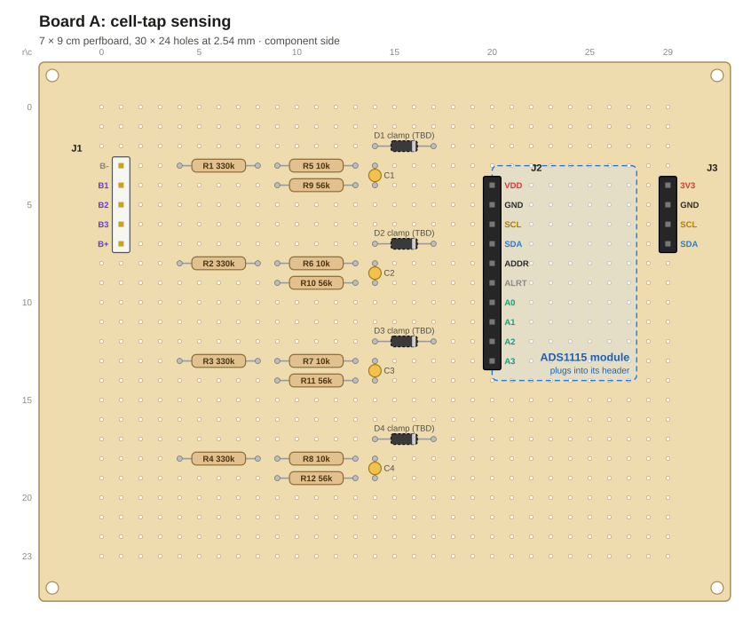
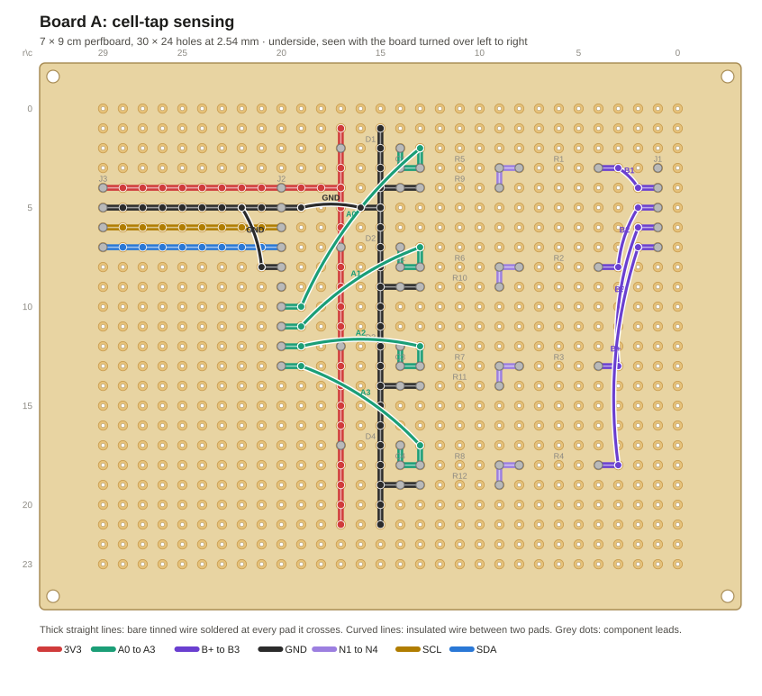
| Ref | Part | Pins and holes (c, r) | Note |
|---|---|---|---|
| J1 | JST-XH 5-pin | B- (1, 3) · B1 (1, 4) · B2 (1, 5) · B3 (1, 6) · B+ (1, 7) | tap harness from the pack |
| R1 | 330k | 1 (4, 3) · 2 (8, 3) | |
| R5 | 10k | 1 (9, 3) · 2 (13, 3) | |
| R9 | 56k | 1 (9, 4) · 2 (13, 4) | |
| C1 | 100n | 1 (14, 3) · 2 (14, 4) | |
| D1 | clamp (TBD) | A (14, 2) · K (17, 2) | fit after the Gate 1 leakage test |
| R2 | 330k | 1 (4, 8) · 2 (8, 8) | |
| R6 | 10k | 1 (9, 8) · 2 (13, 8) | |
| R10 | 56k | 1 (9, 9) · 2 (13, 9) | |
| C2 | 100n | 1 (14, 8) · 2 (14, 9) | |
| D2 | clamp (TBD) | A (14, 7) · K (17, 7) | fit after the Gate 1 leakage test |
| R3 | 330k | 1 (4, 13) · 2 (8, 13) | |
| R7 | 10k | 1 (9, 13) · 2 (13, 13) | |
| R11 | 56k | 1 (9, 14) · 2 (13, 14) | |
| C3 | 100n | 1 (14, 13) · 2 (14, 14) | |
| D3 | clamp (TBD) | A (14, 12) · K (17, 12) | fit after the Gate 1 leakage test |
| R4 | 330k | 1 (4, 18) · 2 (8, 18) | |
| R8 | 10k | 1 (9, 18) · 2 (13, 18) | |
| R12 | 56k | 1 (9, 19) · 2 (13, 19) | |
| C4 | 100n | 1 (14, 18) · 2 (14, 19) | |
| D4 | clamp (TBD) | A (14, 17) · K (17, 17) | fit after the Gate 1 leakage test |
| J2 | ADS1115 module | VDD (20, 4) · GND (20, 5) · SCL (20, 6) · SDA (20, 7) · ADDR (20, 8) · ALRT (20, 9) · A0 (20, 10) · A1 (20, 11) · A2 (20, 12) · A3 (20, 13) | 1 x 10 female header |
| J3 | 4-pin header | 3V3 (29, 4) · GND (29, 5) · SCL (29, 6) · SDA (29, 7) | to board B, J7 |
| # | Kind | Net | From → to | Holes / length |
|---|---|---|---|---|
| 1 | bare | B1 | (1, 4) → (2, 4) | 1 |
| 2 | bare | B1 | (3, 3) → (4, 3) | 1 |
| 3 | bare | N1 | (8, 3) → (9, 3) | 1 |
| 4 | bare | N1 | (9, 3) → (9, 4) | 1 |
| 5 | bare | A0 | (13, 2) → (14, 2) via (13, 3), (14, 3) | 3 |
| 6 | bare | GND | (13, 4) → (15, 4) | 2 |
| 7 | bare | A0 | (19, 10) → (20, 10) | 1 |
| 8 | bare | B2 | (1, 5) → (2, 5) | 1 |
| 9 | bare | B2 | (3, 8) → (4, 8) | 1 |
| 10 | bare | N2 | (8, 8) → (9, 8) | 1 |
| 11 | bare | N2 | (9, 8) → (9, 9) | 1 |
| 12 | bare | A1 | (13, 7) → (14, 7) via (13, 8), (14, 8) | 3 |
| 13 | bare | GND | (13, 9) → (15, 9) | 2 |
| 14 | bare | A1 | (19, 11) → (20, 11) | 1 |
| 15 | bare | B3 | (1, 6) → (2, 6) | 1 |
| 16 | bare | B3 | (3, 13) → (4, 13) | 1 |
| 17 | bare | N3 | (8, 13) → (9, 13) | 1 |
| 18 | bare | N3 | (9, 13) → (9, 14) | 1 |
| 19 | bare | A2 | (13, 12) → (14, 12) via (13, 13), (14, 13) | 3 |
| 20 | bare | GND | (13, 14) → (15, 14) | 2 |
| 21 | bare | A2 | (19, 12) → (20, 12) | 1 |
| 22 | bare | B+ | (1, 7) → (2, 7) | 1 |
| 23 | bare | B+ | (3, 18) → (4, 18) | 1 |
| 24 | bare | N4 | (8, 18) → (9, 18) | 1 |
| 25 | bare | N4 | (9, 18) → (9, 19) | 1 |
| 26 | bare | A3 | (13, 17) → (14, 17) via (13, 18), (14, 18) | 3 |
| 27 | bare | GND | (13, 19) → (15, 19) | 2 |
| 28 | bare | A3 | (19, 13) → (20, 13) | 1 |
| 29 | bare | GND | (15, 1) → (15, 21) | 20 |
| 30 | bare | 3V3 | (17, 1) → (17, 21) | 20 |
| 31 | bare | 3V3 | (17, 4) → (29, 4) | 12 |
| 32 | bare | GND | (15, 5) → (16, 5) | 1 |
| 33 | bare | GND | (19, 5) → (29, 5) | 10 |
| 34 | bare | SCL | (20, 6) → (29, 6) | 9 |
| 35 | bare | SDA | (20, 7) → (29, 7) | 9 |
| 36 | bare | GND | (20, 8) → (21, 8) | 1 |
| 37 | insulated | B1 | (2, 4) → (3, 3) | cut 19 mm |
| 38 | insulated | A0 | (13, 2) → (19, 10) | cut 40 mm |
| 39 | insulated | B2 | (2, 5) → (3, 8) | cut 23 mm |
| 40 | insulated | A1 | (13, 7) → (19, 11) | cut 33 mm |
| 41 | insulated | B3 | (2, 6) → (3, 13) | cut 33 mm |
| 42 | insulated | A2 | (13, 12) → (19, 12) | cut 30 mm |
| 43 | insulated | B+ | (2, 7) → (3, 18) | cut 43 mm |
| 44 | insulated | A3 | (13, 17) → (19, 13) | cut 33 mm |
| 45 | insulated | GND | (16, 5) → (19, 5) | cut 23 mm |
| 46 | insulated | GND | (21, 8) → (22, 5) | cut 23 mm |
The ESP32 sits in two 15-pin female headers with its USB end over the left edge, so the console cable fits with the board in the case. The five NTC dividers run down the right side with their connectors on the edge; the INA226 module, the relay and buzzer connectors and the 5 V input sit along the bottom edge.
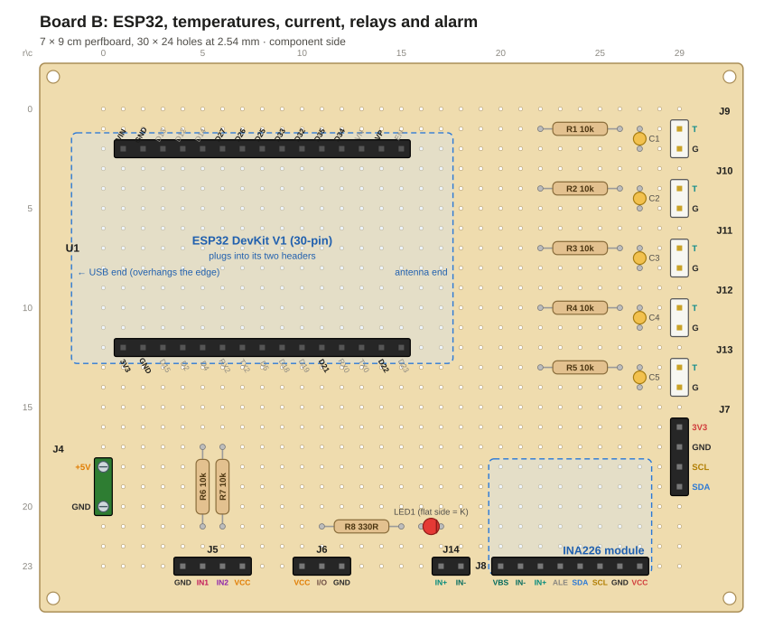
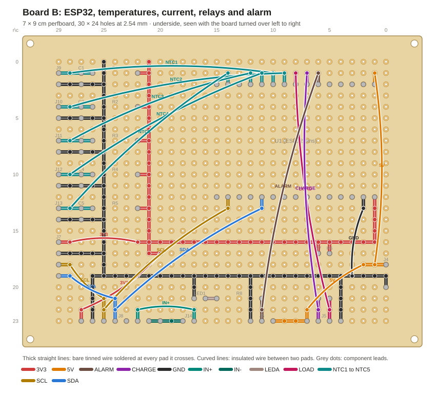
| Ref | Part | Pins and holes (c, r) | Note |
|---|---|---|---|
| U1 | ESP32 DevKit V1 (30-pin) | top row r = 2, bottom row r = 12, columns 1–15; used pins: VIN (1, 2), GND (2, 2), D27 (6, 2), D26 (7, 2), D25 (8, 2), D33 (9, 2), D32 (10, 2), D35 (11, 2), D34 (12, 2), VP (14, 2), 3V3 (1, 12), GND (2, 12), D21 (11, 12), D22 (14, 12) | 2 x 15 female headers, rows 10 holes apart |
| R1 | 10k | 1 (22, 1) · 2 (26, 1) | |
| C1 | 100n | 1 (27, 1) · 2 (27, 2) | |
| J9 | JST-XH 2-pin | T (29, 1) · G (29, 2) | NTC1 (cell 1) |
| R2 | 10k | 1 (22, 4) · 2 (26, 4) | |
| C2 | 100n | 1 (27, 4) · 2 (27, 5) | |
| J10 | JST-XH 2-pin | T (29, 4) · G (29, 5) | NTC2 (cell 2) |
| R3 | 10k | 1 (22, 7) · 2 (26, 7) | |
| C3 | 100n | 1 (27, 7) · 2 (27, 8) | |
| J11 | JST-XH 2-pin | T (29, 7) · G (29, 8) | NTC3 (cell 3) |
| R4 | 10k | 1 (22, 10) · 2 (26, 10) | |
| C4 | 100n | 1 (27, 10) · 2 (27, 11) | |
| J12 | JST-XH 2-pin | T (29, 10) · G (29, 11) | NTC4 (cell 4) |
| R5 | 10k | 1 (22, 13) · 2 (26, 13) | |
| C5 | 100n | 1 (27, 13) · 2 (27, 14) | |
| J13 | JST-XH 2-pin | T (29, 13) · G (29, 14) | NTC5 (air) |
| J8 | INA226 module | VBS (20, 23) · IN- (21, 23) · IN+ (22, 23) · ALE (23, 23) · SDA (24, 23) · SCL (25, 23) · GND (26, 23) · VCC (27, 23) | 1 x 8 female header; module stands over the board |
| J14 | 2-pin header | IN+ (17, 23) · IN- (18, 23) | shunt sense pair |
| J7 | 4-pin header | 3V3 (29, 16) · GND (29, 17) · SCL (29, 18) · SDA (29, 19) | to board A, J3 |
| J4 | 2-pin screw terminal | +5V (0, 18) · GND (0, 20) | from the LM2596 (5.00 V) |
| J5 | 4-pin header | GND (4, 23) · IN1 (5, 23) · IN2 (6, 23) · VCC (7, 23) | to the relay module |
| R6 | 10k | 1 (5, 17) · 2 (5, 21) | |
| R7 | 10k | 1 (6, 17) · 2 (6, 21) | |
| J6 | 3-pin header | VCC (10, 23) · I/O (11, 23) · GND (12, 23) | to the buzzer module |
| R8 | 330R | 1 (11, 21) · 2 (15, 21) | sized for the LED |
| LED1 | red LED | A (16, 21) · K (17, 21) |
| # | Kind | Net | From → to | Holes / length |
|---|---|---|---|---|
| 1 | bare | 5V | (1, 2) → (1, 1) | 1 |
| 2 | bare | ALARM | (6, 2) → (6, 1) | 1 |
| 3 | bare | CHARGE | (7, 2) → (7, 1) | 1 |
| 4 | bare | LOAD | (8, 2) → (8, 1) | 1 |
| 5 | bare | NTC2 | (9, 2) → (9, 1) | 1 |
| 6 | bare | NTC1 | (10, 2) → (10, 1) | 1 |
| 7 | bare | NTC4 | (11, 2) → (11, 1) | 1 |
| 8 | bare | NTC3 | (12, 2) → (12, 1) | 1 |
| 9 | bare | NTC5 | (14, 2) → (14, 1) | 1 |
| 10 | bare | 3V3 | (1, 12) → (1, 16) | 4 |
| 11 | bare | 3V3 | (1, 16) → (21, 16) | 20 |
| 12 | bare | GND | (2, 12) → (2, 13) | 1 |
| 13 | bare | SDA | (11, 12) → (11, 13) | 1 |
| 14 | bare | SCL | (14, 12) → (14, 13) | 1 |
| 15 | bare | 3V3 | (21, 0) → (21, 17) | 17 |
| 16 | bare | GND | (25, 0) → (25, 19) | 19 |
| 17 | bare | 3V3 | (21, 1) → (22, 1) | 1 |
| 18 | bare | NTC1 | (26, 1) → (29, 1) | 3 |
| 19 | bare | GND | (25, 2) → (29, 2) | 4 |
| 20 | bare | 3V3 | (21, 4) → (22, 4) | 1 |
| 21 | bare | NTC2 | (26, 4) → (29, 4) | 3 |
| 22 | bare | GND | (25, 5) → (29, 5) | 4 |
| 23 | bare | 3V3 | (21, 7) → (22, 7) | 1 |
| 24 | bare | NTC3 | (26, 7) → (29, 7) | 3 |
| 25 | bare | GND | (25, 8) → (29, 8) | 4 |
| 26 | bare | 3V3 | (21, 10) → (22, 10) | 1 |
| 27 | bare | NTC4 | (26, 10) → (29, 10) | 3 |
| 28 | bare | GND | (25, 11) → (29, 11) | 4 |
| 29 | bare | 3V3 | (21, 13) → (22, 13) | 1 |
| 30 | bare | NTC5 | (26, 13) → (29, 13) | 3 |
| 31 | bare | GND | (25, 14) → (29, 14) | 4 |
| 32 | bare | IN- | (18, 23) → (21, 23) | 3 |
| 33 | bare | IN+ | (17, 23) → (17, 22) | 1 |
| 34 | bare | IN+ | (22, 22) → (22, 23) | 1 |
| 35 | bare | GND | (26, 23) → (25, 19) via (26, 22), (26, 21), (26, 20), (26, 19) | 5 |
| 36 | bare | 3V3 | (27, 23) → (27, 22) | 1 |
| 37 | bare | 3V3 | (20, 17) → (21, 17) | 1 |
| 38 | bare | SDA | (24, 21) → (24, 23) | 2 |
| 39 | bare | SCL | (25, 21) → (25, 23) | 2 |
| 40 | bare | 3V3 | (21, 16) → (22, 16) | 1 |
| 41 | bare | 3V3 | (28, 16) → (29, 16) | 1 |
| 42 | bare | GND | (25, 17) → (29, 17) | 4 |
| 43 | bare | SCL | (28, 18) → (29, 18) | 1 |
| 44 | bare | SDA | (28, 19) → (29, 19) | 1 |
| 45 | bare | 5V | (0, 18) → (2, 18) | 2 |
| 46 | bare | GND | (0, 20) → (3, 19) via (0, 19), (1, 19), (2, 19) | 4 |
| 47 | bare | GND | (3, 19) → (25, 19) | 22 |
| 48 | bare | 3V3 | (5, 16) → (5, 17) | 1 |
| 49 | bare | 3V3 | (6, 16) → (6, 17) | 1 |
| 50 | bare | LOAD | (5, 21) → (5, 23) | 2 |
| 51 | bare | CHARGE | (6, 21) → (6, 23) | 2 |
| 52 | bare | GND | (4, 19) → (4, 23) | 4 |
| 53 | bare | 5V | (7, 22) → (7, 23) | 1 |
| 54 | bare | 5V | (7, 23) → (10, 23) | 3 |
| 55 | bare | GND | (12, 23) → (12, 19) | 4 |
| 56 | bare | ALARM | (11, 21) → (11, 23) | 2 |
| 57 | bare | LEDA | (15, 21) → (16, 21) | 1 |
| 58 | bare | GND | (17, 21) → (17, 19) | 2 |
| 59 | insulated | GND | (2, 13) → (3, 19) | cut 30 mm |
| 60 | insulated | NTC1 | (10, 1) → (28, 1) | cut 61 mm |
| 61 | insulated | NTC2 | (9, 1) → (28, 4) | cut 64 mm |
| 62 | insulated | NTC3 | (12, 1) → (28, 7) | cut 58 mm |
| 63 | insulated | NTC4 | (11, 1) → (28, 10) | cut 64 mm |
| 64 | insulated | NTC5 | (14, 1) → (28, 13) | cut 62 mm |
| 65 | insulated | IN+ | (17, 22) → (22, 22) | cut 28 mm |
| 66 | insulated | 3V3 | (27, 22) → (20, 17) | cut 37 mm |
| 67 | insulated | SDA | (11, 13) → (24, 22) | cut 55 mm |
| 68 | insulated | SCL | (14, 13) → (25, 22) | cut 51 mm |
| 69 | insulated | 3V3 | (22, 16) → (28, 16) | cut 30 mm |
| 70 | insulated | SCL | (28, 18) → (25, 21) | cut 26 mm |
| 71 | insulated | SDA | (28, 19) → (24, 21) | cut 26 mm |
| 72 | insulated | 5V | (1, 18) → (1, 1) | cut 58 mm |
| 73 | insulated | LOAD | (8, 1) → (5, 22) | cut 69 mm |
| 74 | insulated | CHARGE | (7, 1) → (6, 22) | cut 68 mm |
| 75 | insulated | 5V | (2, 18) → (7, 22) | cut 31 mm |
| 76 | insulated | ALARM | (6, 1) → (11, 22) | cut 70 mm |
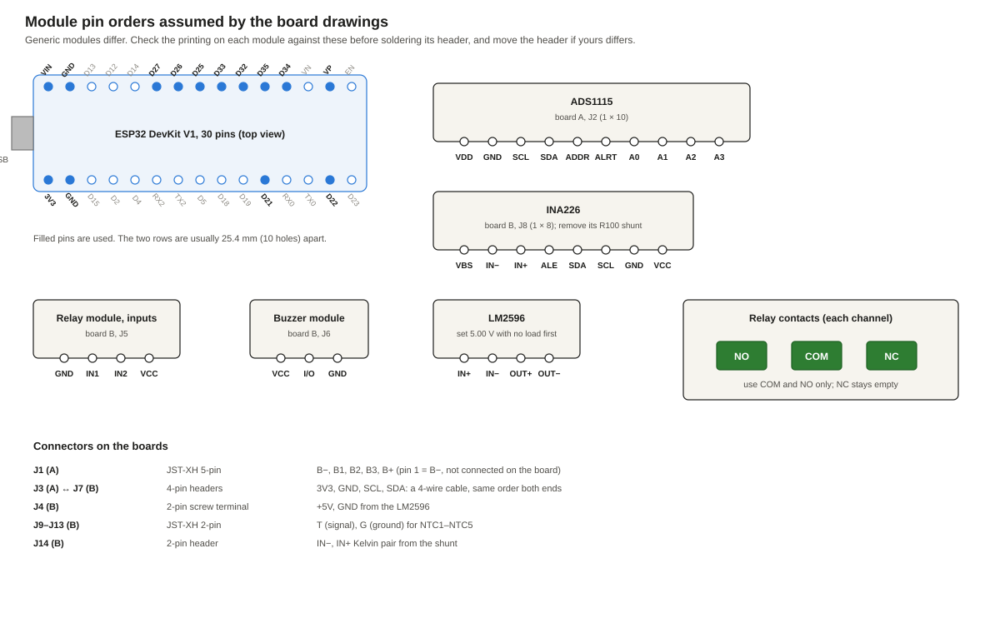
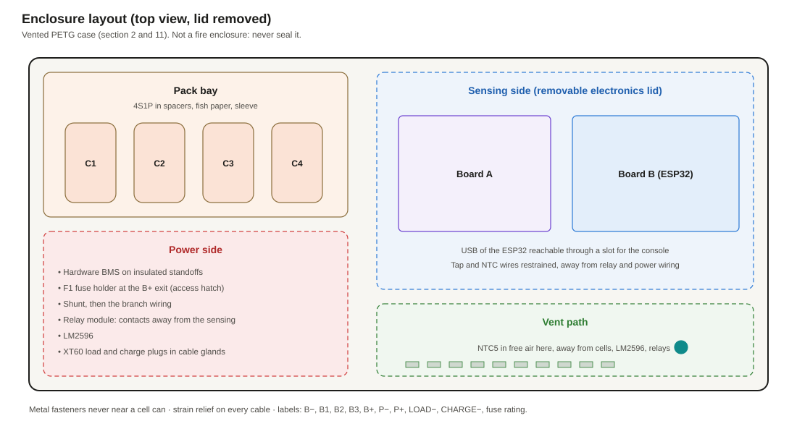
With a multimeter, with no modules plugged in and the clamps not fitted. A reading far from the value means a wrong part or a missing or extra bridge: find it before going on.
| Between | Expected | Why |
|---|---|---|
| J1 B1 → J3 GND (and B2, B3, B+ on their channels) | 386 kΩ | 330 kΩ + 56 kΩ |
| J1 B1 → J1 B2 (and each neighbouring pair) | 772 kΩ | no tap is shorted to another |
| J2 A0 → J3 GND (and A1, A2, A3) | 66 kΩ | 10 kΩ + 56 kΩ |
| J1 B1 → J2 A0 | 340 kΩ | 330 kΩ + 10 kΩ |
| J3 3V3 → J3 GND | open | before the clamps are fitted |
| J1 B− → anything | open | B− is not connected on the board |
| Between | Expected | Why |
|---|---|---|
| J7 3V3 → J7 GND, J4 +5V → J4 GND, J4 +5V → J7 3V3 | open | no short between supplies |
| J9 T → J7 3V3 (and J10–J13 T) | 10 kΩ | NTC pull-ups R1–R5 |
| J5 IN1 → J7 3V3, J5 IN2 → J7 3V3 | 10 kΩ | relay pull-ups R6, R7 |
| J6 I/O → J6 GND, meter on diode test (red on I/O) | about 2 V (1.8–2.4 V) | the LED's forward voltage plus R8 (the LED may glow) |
| J14 IN+ → J14 IN− | open | the sense pair is not shorted |
Board A
| Net | Pins | Reading |
|---|---|---|
| 3V3 | J2 VDD, J3 3V3 | 0 Ω (beeps) |
| GND | J2 GND, J2 ADDR, J3 GND | 0 Ω (beeps) |
| SCL | J2 SCL, J3 SCL | 0 Ω (beeps) |
| SDA | J2 SDA, J3 SDA | 0 Ω (beeps) |
Board B
| Net | Pins | Reading |
|---|---|---|
| 3V3 | U1 3V3, J8 VCC, J7 3V3 | 0 Ω (beeps) |
| 5V | U1 VIN, J4 +5V, J5 VCC, J6 VCC | 0 Ω (beeps) |
| ALARM | U1 D27, J6 I/O | 0 Ω (beeps) |
| CHARGE | U1 D26, J5 IN2 | 0 Ω (beeps) |
| GND | U1 GND, U1 GND, J9 G, J10 G, J11 G, J12 G, J13 G, J8 GND, J7 GND, J4 GND, J5 GND, J6 GND | 0 Ω (beeps) |
| IN+ | J8 IN+, J14 IN+ | 0 Ω (beeps) |
| IN- | J8 VBS, J8 IN-, J14 IN- | 0 Ω (beeps) |
| LOAD | U1 D25, J5 IN1 | 0 Ω (beeps) |
| NTC1 | U1 D32, J9 T | 0 Ω (beeps) |
| NTC2 | U1 D33, J10 T | 0 Ω (beeps) |
| NTC3 | U1 D34, J11 T | 0 Ω (beeps) |
| NTC4 | U1 D35, J12 T | 0 Ω (beeps) |
| NTC5 | U1 VP, J13 T | 0 Ω (beeps) |
| SCL | U1 D22, J8 SCL, J7 SCL | 0 Ω (beeps) |
| SDA | U1 D21, J8 SDA, J7 SDA | 0 Ω (beeps) |
The full procedure is in docs/bring-up.md; the pass and stop rules are in the safe build sequence.
| Gate | What | Firmware and tools | Pass when |
|---|---|---|---|
| 0 | Design frozen | Build the firmware once; measure the charger plug | every part has a purpose and rating |
| 1 | Sensing, no cells | raw, cal, tools/calibrate.py | taps ±20 mV; current ±2 % or ±20 mA; every NTC fault detected |
| 2 | Relays fail-safe | bench build: sim on, test hang, test crash | both contacts open on power-off, boot, reset, watchdog, I2C loss |
| 3 | BMS harness | bench channels; status | tap order and polarity; each cutoff opens only its branch |
| 4 | Cell matching | model r0 … | 20 mV, 3 % capacity, 10 % resistance |
| 5–7 | Mechanics, weld, pack | none | no conductor can rub a cell; sound welds |
| 8 | First power-up | status, tools/serial_log.py | stable readings at rest for 30 min |
| 9 | Controlled discharge | tools/fit_thermal.py, model thermal … | abnormal heat < 0.25 °C/min; 5-min error ≤ 0.5 °C RMS |
| 10 | Controlled charge | tools/ocv_table.py, model ocv … | no unexpected 4.15 V; CC/CV taper |
| 11 | Predictive layer | bms_sim run all; dummy heater; 47 Ω soft short | warnings and trips as the architecture says |
| 12 | Enclosure and release | normal build, model fitted | every gate signed; guide accepts |
idf.py build, idf.py -p PORT flash monitor (ESP-IDF v5.5).status, raw, cal …, model …,
log 1, reset, test hang, test crash, wifi off.Before any cell is connected, the supervisor is tested against a simulated 4S pack: the same code that runs on the
ESP32, with cells, heat, a hardware BMS, sensors with noise, and every fault Gate 11 asks for. A second copy of the
pack runs alongside with only fixed limits, as a conventional BMS has, to show what the predictive layer adds.
Start it with python3 tools/demo.py; it opens the dashboard in the browser.
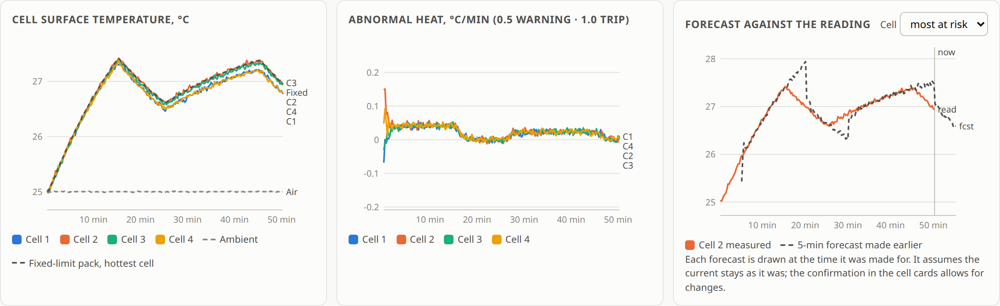
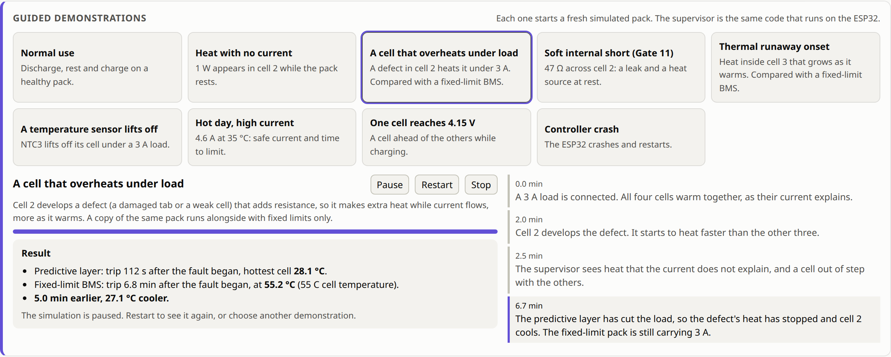
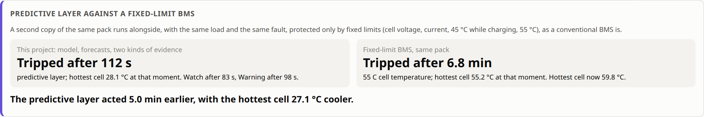
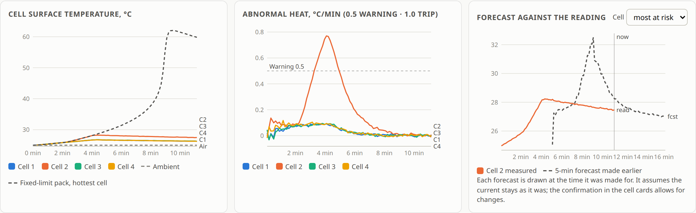
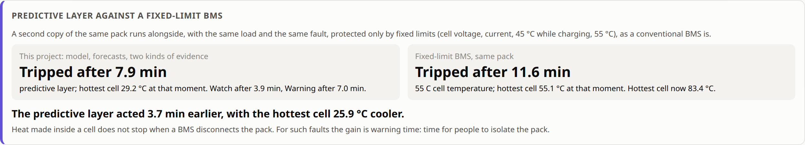
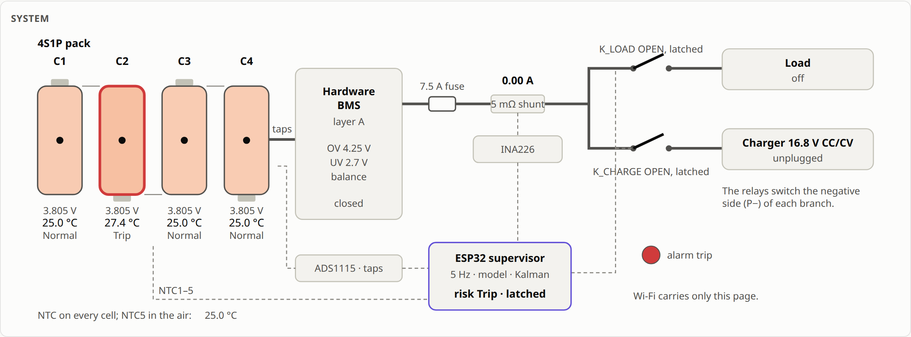
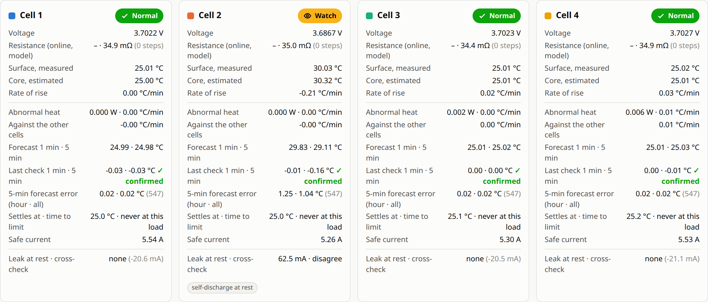
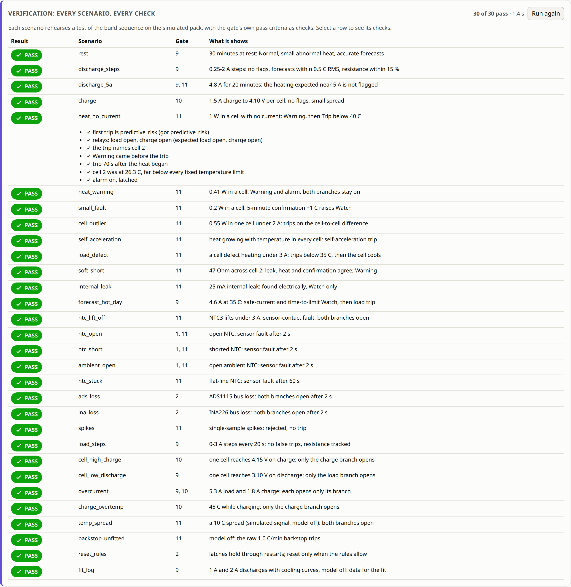
| Demonstration | What the simulator showed |
|---|---|
| Normal use | Highest risk level: Normal. Largest abnormal heat: 0.06 °C/min (the Gate 9 limit for healthy use is 0.25). 5-minute forecast error: 0.11, 0.12, 0.12, 0.11 °C RMS for cells 1–4 (Gate 9 asks for 0.5 or less). |
| Heat with no current | Trip: predictive layer, 58 s after the heat began, with cell 2 at 26.0 °C. Both relays are open and latched; the alarm is on. A fixed-limit BMS: no reaction; hottest cell 27.4 °C, far below 55 °C. |
| A cell that overheats under load | Predictive layer: trip 112 s after the fault began, hottest cell 28.1 °C. Fixed-limit BMS: trip 6.8 min after the fault began, at 55.2 °C (55 C cell temperature). 5.0 min earlier, 27.1 °C cooler. |
| Soft internal short (Gate 11) | Leak estimate, cell 2: 73.4 mA (the resistor drew about 79 mA); the other cells showed none. Energy cross-check while the resistor was on: agree. Level reached: Warning, from thermal and electrical evidence agreeing. No trip: a soft fault raises the alarm and keeps both branches on. A fixed-limit BMS: no reaction; the cell warmed only a few degrees. |
| Thermal runaway onset | Predictive layer: trip 7.9 min after the fault began, hottest cell 29.2 °C. Fixed-limit BMS: trip 11.6 min after the fault began, at 55.1 °C (55 C cell temperature). 3.7 min earlier, 25.9 °C cooler. Disconnecting does not stop heat made inside a cell; the alarm gives people time to isolate the pack. |
| A temperature sensor lifts off | Fault: NTC lifted off its cell, 6 s after the sensor lifted. Both branches opened: with a sensor it cannot trust, the supervisor does not guess. The other cells were not blamed. |
| Hot day, high current | The load stopped at 55 °C cell temperature; only the load branch opened, so charging stays possible. Safe continuous current at the end: 4.03 A. |
| One cell reaches 4.15 V | Trip: cell above 4.15 V. Charge relay open, load relay closed: each limit opens only its own branch. |
| Controller crash | The events show the latch, the refused reset and the accepted reset. Relays now: load closed, charge closed. |
The verification scenarios, all 30 of them, are listed in docs/simulator.md; each one rehearses a gate
test with the gate's own pass criteria.
Three tools check three different parts of the design, and each one is free and open source:
| Tool | What it checks | Where |
|---|---|---|
| KiCad 10 with its simulator, ngspice | The analog circuits: the cell-tap dividers and filters, the NTC dividers, the current shunt, and the cell's thermal model drawn as an electrical circuit | kicad/ |
| GNU Octave (the same files run in MATLAB) | The predictive model: the thermal model and the Kalman observer, written a second time from the firmware and compared with it sample by sample | matlab/ |
| The project's simulator (section 15) | The complete firmware: every limit, fault and gate scenario, on a simulated pack | host/ |
The KiCad sheets open in KiCad 10: open the project, then Inspect → Simulator and run the analysis written on the
sheet. python3 kicad/run_sims.py runs all of them from the command line and checks the results;
the Octave scripts run with octave --no-gui --eval "crosscheck" in matlab/. KiCad's
electrical rules check finds no violation on any sheet. All results in this section are simulation results with the
part values on the sheets; the gates measure the real circuits.
| Circuit | Check | Result | Limit or unit | |
|---|---|---|---|---|
| cell taps | highest ADC input at 4 x 4.2 V | 2.431 | < 3.0 V (Gate 1 stop) | pass |
| cell taps | tap error per 10 nA of leakage | 4.11 | mV (for the TBD clamp) | pass |
| cell taps | settling to 16 bits after a step | 64.4 | < 200 ms (one 5 Hz sample) | pass |
| NTC | divider at 25 °C | 1.65 | 1.65 V (half of 3.3 V) | pass |
| NTC | ADC voltage at the charge trip (45 °C) | 1 | 0.15-2.45 V (ESP32 ADC1, 12 dB) | pass |
| NTC | ADC voltage at the discharge trip (55 °C) | 0.7573 | 0.15-2.45 V (ESP32 ADC1, 12 dB) | pass |
| current | shunt voltage at 5 A | 25 | within +/-81.92 mV (INA226) | pass |
| current | sign: discharge reads positive | 25 | > 0 | pass |
| current | error if the module's R100 is left in place | -4.76 | % (must be removed; Gate 1 allows 2 %) | pass |
| thermal | core rise after 1 h of 1 W | 29.459 | approaches 32 °C (R_core + R_air) | pass |
| thermal | ngspice against Octave, largest difference | 0.0002 | < 0.01 °C | pass |
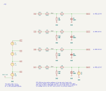
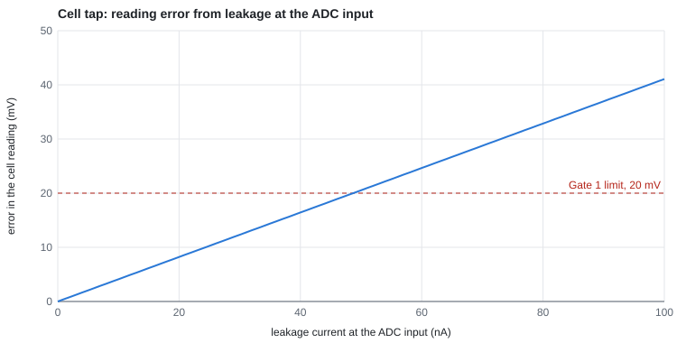
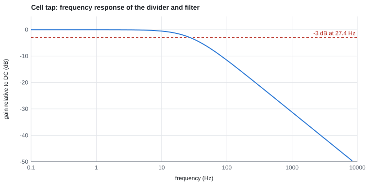
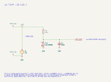
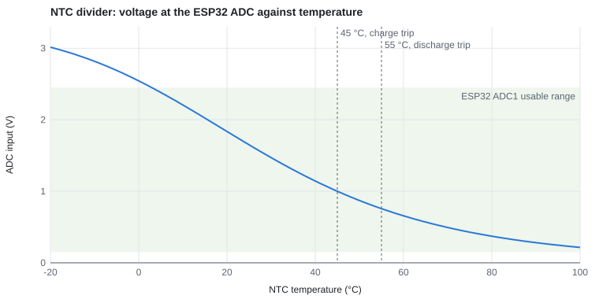
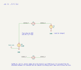
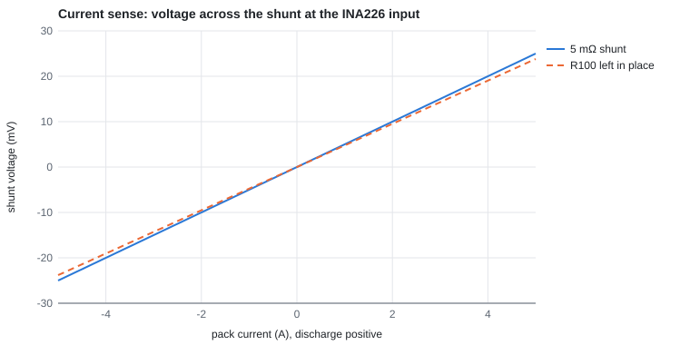
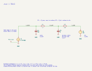
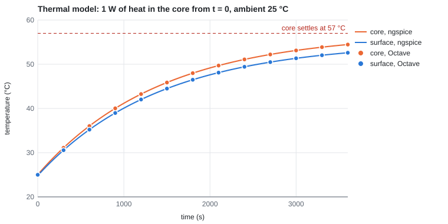
matlab/thermal_observer.m is a copy of the firmware's Kalman observer (section 9.2), written in the
.m language. crosscheck runs simulator scenarios with a log of every sample, gives the logged
current and temperatures to the Octave observer, and compares its core temperature and abnormal heat with the
firmware's. The limits are 0.01 °C and 0.002 W; the differences come from the rounding of the log.
| Scenario | Samples compared | Largest core-temperature difference | Largest abnormal-heat difference | Result |
|---|---|---|---|---|
discharge_steps | 24,600 | 0.0029 °C | 0.0013 W | agree |
heat_no_current | 950 | 0.0066 °C | 0.0013 W | agree |
load_defect | 4,307 | 0.0026 °C | 0.0013 W | agree |
soft_short | 28,501 | 0.0040 °C | 0.0010 W | agree |
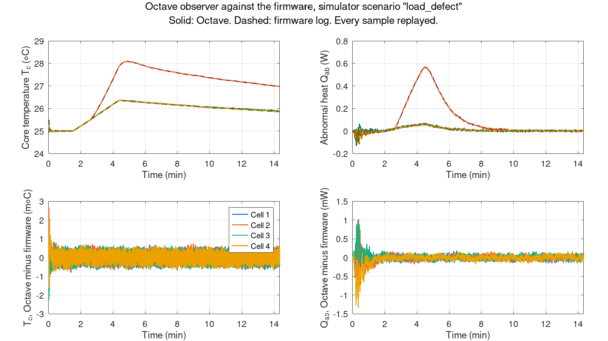
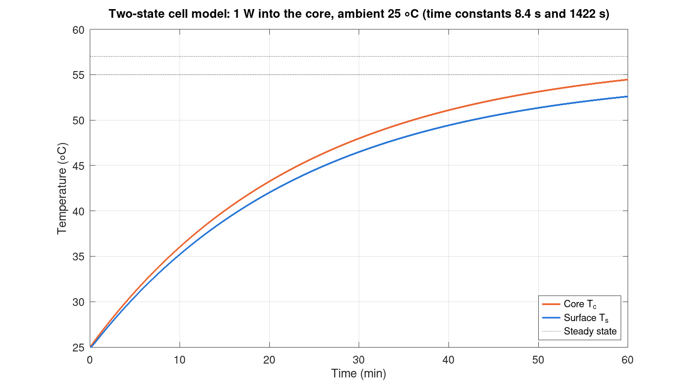